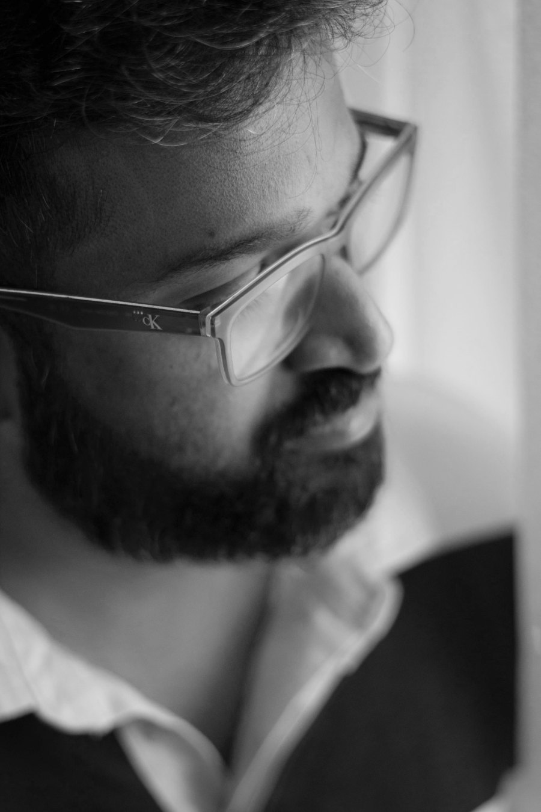

ABOUT
Sharon Pallath
A 3D visualizer, graphic designer and video editor working between Dubai and Kochi — drawn to warm light, honest materials, and the quiet drama of a well-staged render.

Sharon began in print — wedding albums, brochures and visiting cards in Ernakulam — and spent the next twelve years widening the frame: nine of them at Sedar Global rendering interiors and window couture for the Gulf's most demanding homes, then mobile-tech years at Oskar and Blue Sky Phones building product renders, packaging and campaigns end to end.
The approach hasn't changed since the print days: light before effects, material before decoration, one clear idea per frame. Lately that pipeline runs through 3ds Max, Corona and V-Ray on one screen — and generative AI tooling on the other, treated the same way film photographers treat a new lens: carefully, and only when it serves the picture.
SELECTED SEASONS
- Blue Sky Phones
- Oskar Phones
- Sedar Global
- E Print DPS
- Cochin CADD Centre